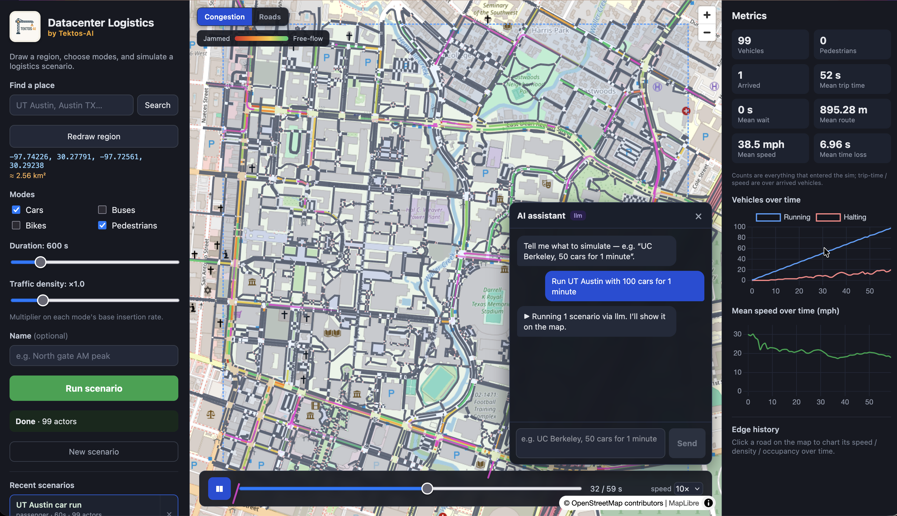
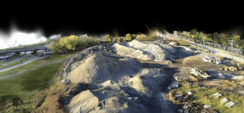
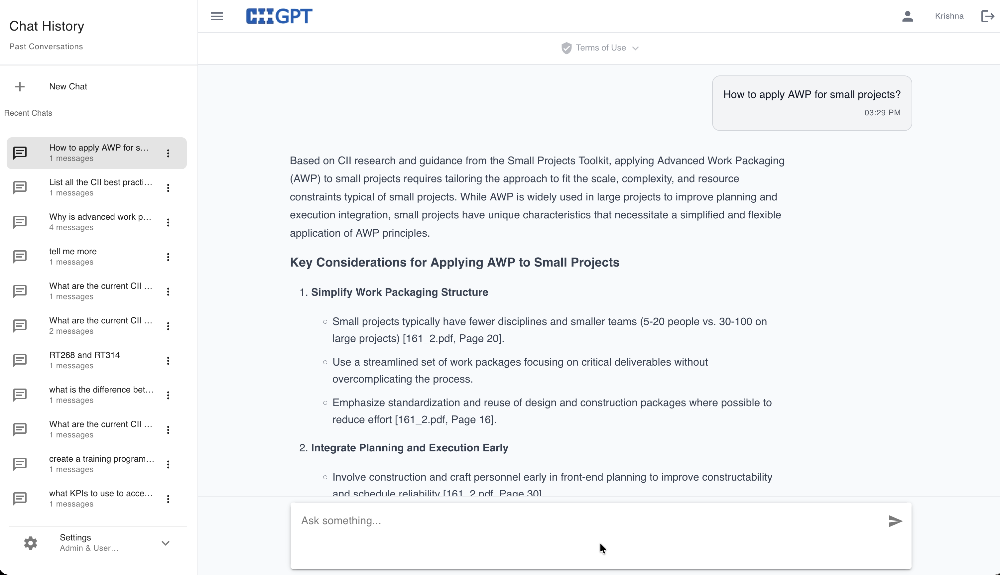
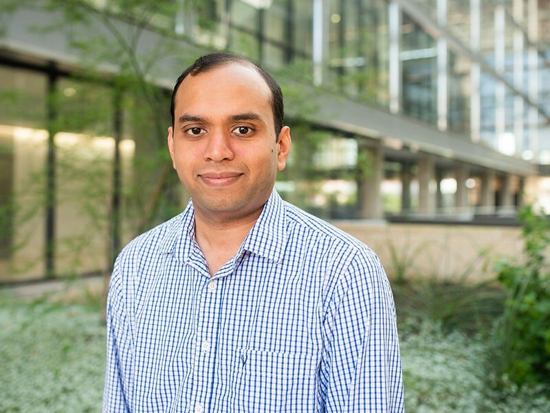

Building AI's infrastructure,
faster.
AI software for the people who plan, design, and build large data centers. Analysis that used to take days now takes seconds.

Four products. Each built to do in seconds
what used to take days.
Regional traffic and logistics,
simulated in minutes
- Map how construction traffic will move across a whole region in minutes instead of days
- Covers the full road network, right down to individual intersections
- Run dozens of what-if scenarios in a single meeting
- Find haul-route conflicts and bottlenecks before your crews reach the site

A 3D site model from
drone footage, in seconds
- Turn 53 acres of footage into a full 3D model in 8 seconds
- Works with the drone and camera footage your team already flies, so you need no special scanners
- Walk the site in 3D to track progress, check as-builts, and build out your BIM
- The model recognizes what it sees and labels concrete, steel, rebar, and equipment

Data center layout optimization,
500X faster
- Compare thousands of layout options in the time one airflow simulation used to take
- Place racks, cooling, and power while staying inside real temperature limits
- Get answers about 500 times faster than traditional simulation tools

A project assistant that has
read every document
- Pulls the key facts out of your reports, drawings, specs, and documents and connects them
- Ask a question in plain language and get an answer in seconds, with a link to the source
- Ties related details together across thousands of pages so nothing gets lost
- Built on your own project records, with industry standards like CII included

Built by experts in
AI and construction.
Our tools come out of years of university research into how physical systems behave and how computers can understand images and video. Because we built the core methods ourselves, they run fast and stay accurate enough to trust on a real project.
Building a data center? Let's talk.Grounded in real physics
Our models follow the same engineering principles that govern how airflow, materials, and structures behave, so the results hold up on site.
Built in-house
We wrote the core algorithms ourselves, which is why they run far faster than general-purpose tools.
Held to engineering standards
We measure our tools against the accuracy real engineering work demands, so you can rely on the numbers on a live job.
The team behind
Tektos AI

Krishna Kumar
Associate Professor of Civil, Architectural, and Environmental Engineering at UT Austin and core faculty at the Oden Institute for Computational Engineering and Sciences. He holds a Ph.D. from the University of Cambridge (2015), an M.S. from IIT Madras, and a B.E. from Anna University.
His research builds AI that can simulate how physical systems behave and learn from real-world data, the foundation the Tektos tools are built on. He won the NSF CAREER Award in 2024 and directs the $7M NSF Chishiki.ai initiative for AI in civil engineering.
Chris Rausch
Assistant Professor of Construction Engineering and Project Management at UT Austin (CAEE), where he leads the Digital Harvest Lab. He holds B.A.Sc., M.A.Sc., and Ph.D. degrees in Civil Engineering from the University of Waterloo, where his doctoral work built algorithms for controlling dimensional accuracy in modular and prefabricated construction.
His research covers digital twins, turning site scans into BIM models, and computational design for infrastructure. He is Program Director of ETHIC, a HUD-funded Center of Excellence, and has published more than 38 papers with over 1,000 citations.
Building a data center?
We can help you move faster.
We work directly with engineering teams and consultants on data center design, construction, and operations. Reach out to see the products in action.
Open the contact form